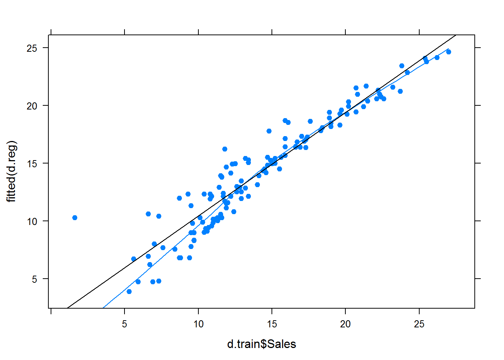
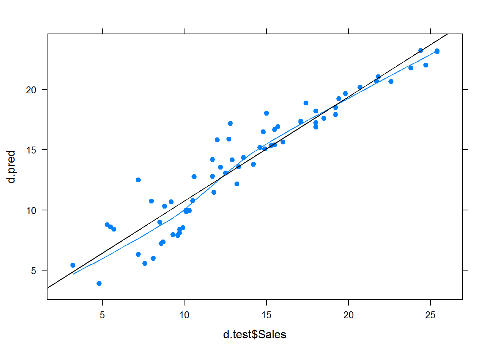

library(lattice)
library(e1071)## Warning: package 'e1071' was built under R version 3.1.2library(MASS)
d <- read.csv("advertising.csv", row.names = NULL)
d$X <- NULL
d.size <- nrow(d) Треть – обучающая выборка.
train.size <- d.size * 2. / 3
train.idcs <- sample(d.size, train.size)
d.train <- d[train.idcs,]
d.test <- d[-train.idcs,]Линейная регрессия:
d.reg <- lm(Sales ~ ., d.train)
summary(d.reg);##
## Call:
## lm(formula = Sales ~ ., data = d.train)
##
## Residuals:
## Min 1Q Median 3Q Max
## -8.6991 -0.5344 0.2489 1.1579 2.5880
##
## Coefficients:
## Estimate Std. Error t value Pr(>|t|)
## (Intercept) 3.143942 0.375254 8.378 7.87e-14 ***
## TV 0.045657 0.001722 26.515 < 2e-16 ***
## Radio 0.179338 0.010654 16.832 < 2e-16 ***
## Newspaper 0.002455 0.007102 0.346 0.73
## ---
## Signif. codes: 0 '***' 0.001 '**' 0.01 '*' 0.05 '.' 0.1 ' ' 1
##
## Residual standard error: 1.647 on 129 degrees of freedom
## Multiple R-squared: 0.8974, Adjusted R-squared: 0.8951
## F-statistic: 376.3 on 3 and 129 DF, p-value: < 2.2e-16Обученную модель спросим:
d.pred <- predict(d.reg, d.test)
Нужно посчитать rss:
rss <- function(x) sqrt(sum(x^2) / length(x))
c(rss(d.reg$residuals),rss(d.pred - d.test$Sales))## [1] 1.621732 1.778001Наибольший вклад, думаю, вносят ошибки на низких значениях sales.
Будем по одному убирать признаки. Проверим, что действительно указанный выше t-статистикой newspaper незначим.
d.reg.cut <- update(d.reg, . ~ . - TV)
d.pred.cut <- predict(d.reg.cut, d.test)
c(rss(d.reg.cut$residuals), rss(d.pred.cut - d.test$Sales))## [1] 4.118742 4.549011Стало хуже, вывод: TV значим.
d.reg.cut <- update(d.reg, . ~ . - Newspaper);
d.pred.cut <- predict(d.reg.cut, d.test);
c(rss(d.reg.cut$residuals), rss(d.pred.cut - d.test$Sales))## [1] 1.622483 1.772903Стало чуть лучше, вывод: Newspaper незначим.
d.reg.cut <- update(d.reg, . ~ . - Radio);
d.pred.cut <- predict(d.reg.cut, d.test);
c(rss(d.reg.cut$residuals), rss(d.pred.cut - d.test$Sales))## [1] 2.899369 3.457020Стало хуже, вывод: Radio значим.
В вырожденном случае удалим все признаки и опять будет плохо:
badcut <- lm(Sales ~ 1, data = d.train)
badpredcut <- predict(badcut, d.test)
c(rss(badcut$residuals),rss(badpredcut - d.test$Sales) )## [1] 5.063859 5.478378